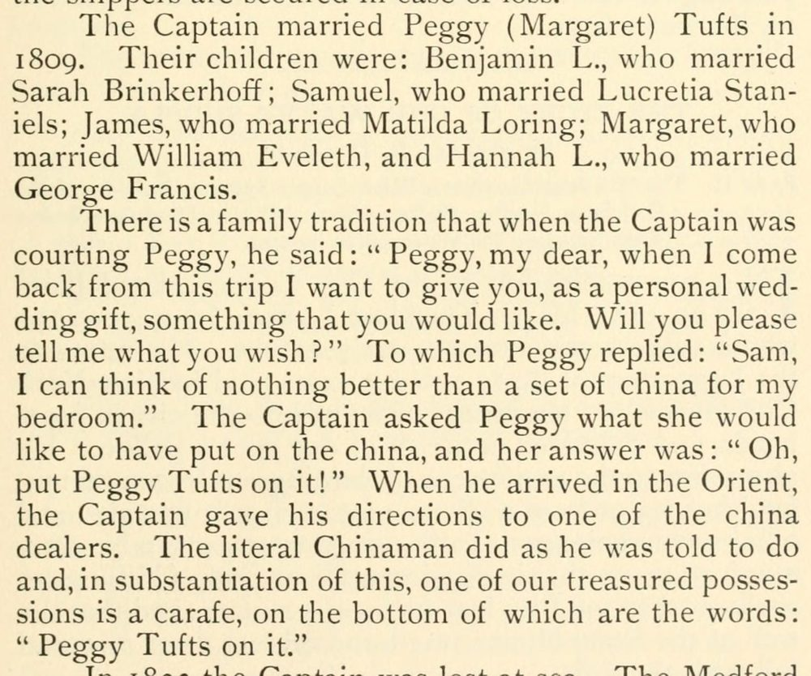

Biography
Margaret Tufts, called Peggy, was born in 1779, the daughter of Samuel Tufts 2nd (1752–1815) and Margaret (Hodgkins) Tufts. Brooks lists her in his register of Medford families: “Margaret, b. 1779; m. Samuel Swan, jun.” (Charles Brooks, History of the Town of Medford (1855), p. 551. Page scan (Internet Archive)).
and Margaret (Hodgkins) Tufts. Brooks lists her in his register of Medford families: “Margaret, b. 1779; m. Samuel Swan, jun.” (Charles Brooks, History of the Town of Medford (1855), p. 551. Page scan (Internet Archive)).
Her husband was a Medford sea captain in the African and East India trade. In 1940 the Medford Historical Society printed a family account of him, contributed by his descendants, which tells how Peggy came by a set of china bearing her own name:

“The Captain married Peggy (Margaret) Tufts in 1809. Their children were: Benjamin L., who married Sarah Brinkerhoff; Samuel, who married Lucretia Staniels; James, who married Matilda Loring; Margaret, who married William Eveleth, and Hannah L., who married George Francis. There is a family tradition that when the Captain was courting Peggy, he said: “Peggy, my dear, when I come back from this trip I want to give you, as a personal wedding gift, something that you would like. Will you please tell me what you wish?” To which Peggy replied: “Sam, I can think of nothing better than a set of china for my bedroom.” The Captain asked Peggy what she would like to have put on the china, and her answer was: “Oh, put Peggy Tufts on it!” When he arrived in the Orient, the Captain gave his directions to one of the china dealers. The literal Chinaman did as he was told to do and, in substantiation of this, one of our treasured possessions is a carafe, on the bottom of which are the words: “Peggy Tufts on it.””
“Captain Samuel Swan, 3rd, of Medford,” Medford Historical Register XLIII (June–December 1940), p. 27. View the page scan
The carafe was then kept by the Captain’s descendants, the Yardley family of East Orange, New Jersey; its present location is not known. The same account says Captain Swan was “supposed to have been lost at sea the early part of 1823. Vessel and company never heard from,” and that his widow kept a light burning and the door unlocked every night in the old Swan home west of the First Parish Church, where George Washington is said to have stopped (p. 28). Their granddaughter, Mrs. Charles Burleigh Yardley, was born Margaret Tufts Swan.
Service Record
Town: Medford, Mass. · Dates: 1779 – date not yet found
No military service is recorded for her. Her father, Samuel Tufts 2nd, was of the Revolutionary generation.
Family Connection
Father: Samuel Tufts 2nd (1752–1815) . Mother: Margaret (Hodgkins) Tufts (d. 7 August 1793). Brother: Samuel (1784–1821) (Charles Brooks, History of the Town of Medford (1855), p. 551. Page scan (Internet Archive)). Children: Benjamin L., Samuel, James, Margaret (Mrs. William Eveleth) and Hannah L. (Mrs. George Francis) Swan (“Captain Samuel Swan, 3rd, of Medford,” Medford Historical Register XLIII (June–December 1940), p. 27. View the page scan).
. Mother: Margaret (Hodgkins) Tufts (d. 7 August 1793). Brother: Samuel (1784–1821) (Charles Brooks, History of the Town of Medford (1855), p. 551. Page scan (Internet Archive)). Children: Benjamin L., Samuel, James, Margaret (Mrs. William Eveleth) and Hannah L. (Mrs. George Francis) Swan (“Captain Samuel Swan, 3rd, of Medford,” Medford Historical Register XLIII (June–December 1940), p. 27. View the page scan).
Relatives with profiles on this site: father Samuel Tufts 2nd (1752–1815) .
.
Spouse(s)
- Capt. Samuel Swan (“jun.” in Brooks, “3rd” in the 1940 account), Medford sea captain; married 1809; lost at sea, early 1823 (“Captain Samuel Swan, 3rd, of Medford,” Medford Historical Register XLIII (June–December 1940), p. 27. View the page scan).
Authoritative IDs / Index Numbers
| Source | ID / status |
|---|---|
| Perseus person index (auth=) | Note: Pending further work. |
| Find a Grave memorial | Note: Pending further work. |
| Brooks, History of Medford (1855) register no. | Note: Pending further work. |
| Mass. Soldiers and Sailors | Not yet checked for this page |
| DAR ancestor no. | Note: Pending further work. |
| FamilySearch ID | Note: Pending further work. |
| Geni profile | Note: Pending further work. |
| WikiTree ID | Note: Pending further work. |
| Town / vital records | Medford VRs not yet checked by volume and page |
Only IDs confirmed against dates and family are given as matches. “Not yet checked” means the source has not been searched; “Checked, not found” means it was searched without a match.
⚑ Unverified
Husband’s name: Brooks calls him Samuel Swan, jun.; the 1940 account calls him Captain Samuel Swan, 3rd. They appear to be the same man, but this is Unverified. The china: the story is a family tradition; the carafe is not known to survive in a public collection. Her death date has not yet been found. Note: Pending further work.
Links and Resources
Every source, record, map, survey, marker and artifact tied to this person, gathered in one place. Page numbers are given where a book is cited.
Maps, Surveys and Artifacts
- — Clipping: “Peggy Tufts on it”. Detail of p. 27, Medford Historical Register XLIII (1940), “Captain Samuel Swan, 3rd, of Medford”: Peggy Tufts’s marriage and the story of her china. Image: Medford Hist

Digitized Books and Journals
- Page scan (Internet Archive) — …of Samuel Tufts 2nd (1752–1815) and Margaret (Hodgkins) Tufts. Brooks lists her in his register of Medford families: “Margaret, b. 1779; m. Samuel Swan, jun.” (Charles Brooks, History of the Town of Medford (1855), p. 551.
- Source: Internet Archive (full page) — …(1940), “Captain Samuel Swan, 3rd, of Medford”: Peggy Tufts’s marriage and the story of her china.Image: Medford Historical Society, Medford Historical Register, via Internet Archive. Shown for non-commercial historical use.